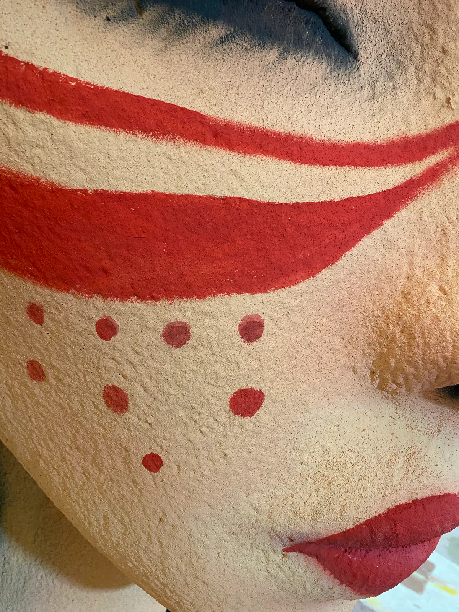

Custom sculpture for visitor destinations, cultural streets, themed attractions and character-led spaces. Develop a coherent visual theme alongside visitor routes, viewing distances and the site team’s requirements.
Tourism & Themed Art Installations
Custom sculpture for visitor destinations, cultural streets, themed attractions and character-led spaces. Develop a coherent visual theme alongside visitor routes, viewing distances and the site team’s requirements.
Start with your project
Destination operators, attraction developers and brand project teams.
Themed focal points, character forms and related sculpture groups.
Projects whose main brief centres on a theme, story or visitor experience.
Agree the scope
Supply the approved theme, original or properly licensed artwork, views and colour references.
Discuss viewing routes, visitor contact, accessibility, clearances and whether the work is decorative or intended for interaction.
Record finish approvals, fabrication checkpoints, outdoor exposure and the responsibilities for site works and installation.
Images and evidence
Separate fabrication records show painted portraits, a decorative illuminated figure and a textured face form. Review authorised artwork, colours, textures and interfaces; these are not evidence of attraction clients or character reproduction rights.
WEIERYANG fabrication record — WEIERYANG fabrication record: portrait form and painted colour areas.

WEIERYANG fabrication record — WEIERYANG fabrication detail: painted colour transitions and surface detailing.
WEIERYANG production record — Workshop view of a decorative portrait and illuminated details. Record approved artwork, colour areas and electrical interfaces before fabrication.
WEIERYANG production record — Leaf-like forms and butterfly details surround the face. Review motif drawings, painted texture and colour samples for the new project.
For custom theme park sculptures, connect original or properly authorised artwork to a site and visitor-use brief. A standalone themed art installation and a multi-piece programme need different approval schedules; agree the OEM fabrication and lighting interfaces for each.
Confirm rights and approved views
Provide permitted use, the artwork revision, front, side and rear views or a 3D model, pose, dimensions and colour references.
Record appearance approvals
Name the approver for proportions, facial or surface details, colour and finish. Specify the sample or first-article record needed before release.
Define visitor and site requirements
Describe decorative or interactive use, visitor contact, locations, exposure and any repeated components. Local safety and installation responsibilities require agreement.
Before an OEM quotation
Distinguish artwork adaptation, model development and fabrication responsibilities.
Confirm authorised quantity and use, approval stages and treatment of design revisions.
Define packing, transport segments, local assembly and the documents requested for handover.
Before you commission
How does an IP-themed project differ from a venue category?
The primary category follows the project brief. A restaurant mascot stays under Retail & Dining; a destination-wide theme or character-led visitor installation belongs here. Character themes can also be used as cross-category tags.
Does a character sculpture automatically include play or climbing use?
No. Decorative display and interactive use have different design requirements. Describe the intended visitor contact before review, and agree the relevant engineering, local safety review and site responsibilities separately.
Does displaying a character reference authorise reproduction?
No. Permission to display an image does not establish permission to fabricate that design. Supply original artwork or evidence that the proposed use and quantity are properly authorised before the project proceeds.
How can a themed series maintain a consistent appearance?
Use approved views, colour references and a recorded sample or first article as agreed comparison points. Define which details are repeated, which vary by site and who approves changes; do not infer material or finish specifications from a photo.
How does a theme park sculpture programme differ from a standalone themed art installation?
A single installation can be briefed around one work, its approved views and its location. For a theme park sculpture programme, add an artwork-and-location schedule, repeated and variant details, permitted visitor contact and any lighting interfaces. Name who approves the shared theme and who releases each item for fabrication.
Tell us about your space.
Share the project location, intended placement, drawings or dimensions, artwork and installation requirements. The proposal will define the design, fabrication and delivery scope.
Authorized visual reference — Authorized commercial-space reference: sculpture, water edge and visitor circulation.
Custom sculpture for hotel lobbies, resort arrivals, atriums, offices and shared commercial areas. Begin with the architecture, visitor routes and the team responsible for approvals.
WEIERYANG fabrication record — WEIERYANG fabrication record: an overall view of the hand-form arrangement.
Custom sculpture for restaurants, cafes, bars, retail stores and brand flagships. Develop a recognisable focal point around the venue’s identity, customer circulation and daily operations.
WEIERYANG fabrication record — WEIERYANG fabrication record: portrait form and painted colour areas.
Custom sculpture for visitor destinations, cultural streets, themed attractions and character-led spaces. Develop a coherent visual theme alongside visitor routes, viewing distances and the site team’s requirements.
Verified construction record — Verified Middle East construction record: installation in progress.
Custom sculpture for civic plazas, parks, community spaces and public landmarks. Review the relationship to the site, long views, weather exposure and structural coordination before defining the work.